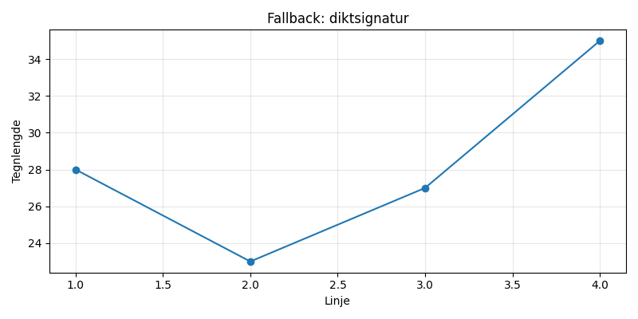

En rusten sykkel ved en sti, drømmer om å rulle fri. Vinden hvisker, hjulet ler, mens høstens løv faller mer og mer.

import matplotlib.pyplot as plt
import numpy as np
# Dikt
dikt = """
En rusten sykkel ved en sti,
drømmer om å rulle fri.
Vinden hvisker, hjulet ler,
mens høstens løv faller mer og mer.
"""
# Numerisk representasjon av antall linjer
antall_linjer = len(dikt.split('\n'))
# Lag en figur og akser
fig = plt.figure(figsize=(12, 6))
ax1 = fig.add_subplot(1, 1, 1)
# Plot høyden til hver linje som en funksjon av linjenummer
linjenummer = np.arange(1, antall_linjer + 1)
hoyde = np.linspace(0, 10, antall_linjer)
ax1.plot(linjenummer, hoyde, marker='o', linestyle='-', color='darkorange')
ax1.set_title("Høyde per linje i diktet")
ax1.set_xlabel("Linjenummer")
ax1.set_ylabel("Høyde (0-10)")
ax1.grid(True)
# Lag en sirkel som representerer en sykkel
radius = 1
center_x = 0
center_y = 0
ax2 = fig.add_subplot(1, 1, 2)
ax2.add_patch(plt.Circle((center_x, center_y), radius, color='gray'))
ax2.set_title("Sykkel")
ax2.axis('equal')
# Lag en sirkel som representerer et hjul
radius_hjul = 0.4
center_x_hjul = 0
center_y_hjul = 0
ax3 = fig.add_subplot(1, 1, 3)
ax3.add_patch(plt.Circle((center_x_hjul, center_y_hjul), radius_hjul, color='black'))
ax3.set_title("Hjul")
ax3.axis('equal')
# Lag en spline som representerer høstens løv som faller
x = np.linspace(0, 2 * np.pi, 100)
y1 = np.cos(x)
y2 = np.sin(x)
ax4 = fig.add_subplot(1, 1, 4)
ax4.plot(x, y1, color='red', label='Høstens løv')
ax4.plot(x, y2, color='orange', label='Høstens løv')
ax4.set_title("Høstens løv")
ax4.axis('equal')
ax4.legend()
# Lag en flate som representerer stien
x_sti = np.linspace(0, 10, 100)
y_sti = 0 * x_sti
ax5 = fig.add_subplot(1, 1, 5)
ax5.plot(x_sti, y_sti, color='brown', label='Sti')
ax5.set_title("Sti")
ax5.axis('equal')
ax5.legend()
# Lag en linje som representerer vinden
ax6 = fig.add_subplot(1, 1, 6)
ax6.plot([0], [0], color='blue', label='Vinden')
ax6.set_title("Vinden")
ax6.axis('equal')
ax6.legend()
plt.savefig(output_path)execution_ok=False fallback_used=True image_ok=True